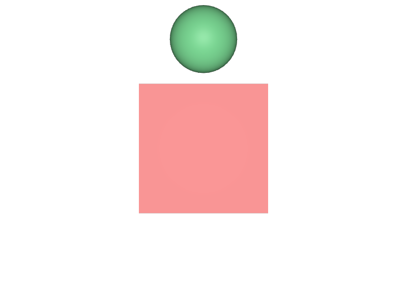
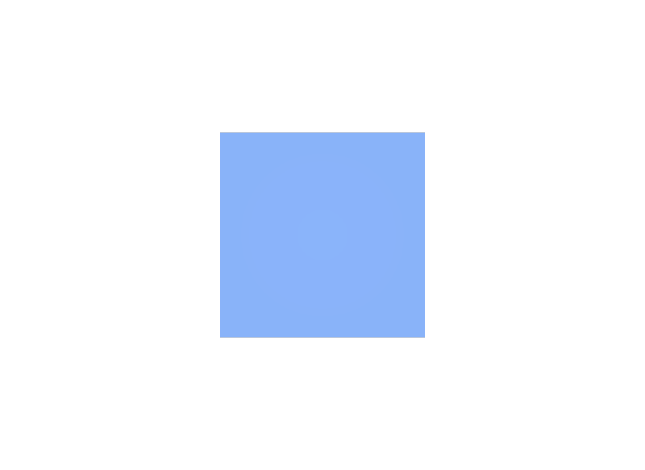

withを使わずに書く
Variantの外側へ入ってしまい、選択を変えても結果が変わりません。エラーにならないので気付きにくい失敗です。
STEP 51 · COMPOSITION
選択肢の「中へ」書き込みます
今日これだけ
公式情報に基づく説明
STEP 41 Variant Setは、名前の付いた選択肢をひとつのPrimにまとめる仕組みです。選択肢ごとの中身は、通常の場所ではなくVariantの内側へ書きます。PythonではGetVariantEditContext()をwith文で使い、そのブロックの中で行った記述だけが、選択中のVariantへ入ります。
USDA
def Xform "Widget" (
prepend variantSets = "look"
variants = {
string look = "plain"
}
)
{
variantSet "look" = {
"plain" {
def Cube "Body"
{
double size = 1
color3f[] primvars:displayColor = [(0.62, 0.62, 0.64)]
}
}
"warm" {
def Cube "Body"
{
double size = 1
color3f[] primvars:displayColor = [(0.85, 0.2, 0.2)]
}
def Sphere "Badge"
{
double radius = 0.3
color3f[] primvars:displayColor = [(0.2, 0.7, 0.3)]
double3 xformOp:translate = (0, 0.9, 0)
uniform token[] xformOpOrder = ["xformOp:translate"]
}
}
"cool" {
def Cube "Body"
{
double size = 1
color3f[] primvars:displayColor = [(0.15, 0.35, 0.85)]
}
}
}
}読み方は3段階です。variantSets = "look"が「lookという選択肢の組を持つ」、variants = { string look = "plain" }が「今はplainを選んでいる」、variantSet "look" = { ... }が「各選択肢の中身」です。warmだけがPrimを1つ多く持っている点にも注目してください。Variantは値だけでなく構造そのものを差し替えられます。
結果
look = "plain"。灰色の箱だけです。examples/lesson-32/variants.usda / Apple USD Tools 0.25.2 のusdrecord（Hydra Storm・Metal）/ macOS 26.5.2・Apple M4
look = "warm"。色が赤に変わり、さらにBadgeという球が増えています。SetVariantSelection("warm")してからFlatten()し描画
look = "cool"。球は消え、色が青になります。SetVariantSelection("cool")してからFlatten()し描画Diagram
Python
from pxr import Gf, Sdf, Usd, UsdGeom
stage = Usd.Stage.CreateNew("variants.usda")
UsdGeom.Xform.Define(stage, "/World")
widget = UsdGeom.Xform.Define(stage, "/World/Widget").GetPrim()
vset = widget.GetVariantSets().AddVariantSet("look")
for name, color in (("plain", Gf.Vec3f(0.62, 0.62, 0.64)),
("warm", Gf.Vec3f(0.85, 0.2, 0.2))):
vset.AddVariant(name)
vset.SetVariantSelection(name)
with vset.GetVariantEditContext():
body = UsdGeom.Cube.Define(stage, "/World/Widget/Body")
UsdGeom.PrimvarsAPI(body).CreatePrimvar(
"displayColor", Sdf.ValueTypeNames.Color3fArray,
UsdGeom.Tokens.constant).Set([color])
vset.SetVariantSelection("plain")
stage.Save()手順は4つです。AddVariantSetで組を作り、AddVariantで選択肢を足し、その選択肢を選んだ状態でGetVariantEditContext()を開き、その中で書きます。選択していない選択肢へは書き込めないため、SetVariantSelectionを先に呼ぶ必要があります。
確かめる
from pxr import Usd
stage = Usd.Stage.Open("variants.usda")
vset = stage.GetPrimAtPath("/World/Widget").GetVariantSet("look")
print(vset.GetVariantNames()) # ['plain', 'warm']
print(vset.GetVariantSelection()) # plain
body = stage.GetPrimAtPath("/World/Widget/Body")
print(body.GetAttribute("primvars:displayColor").Get())
# [(0.62, 0.62, 0.64)]
vset.SetVariantSelection("warm")
print(body.GetAttribute("primvars:displayColor").Get())
# [(0.85, 0.2, 0.2)]同じPathの同じAttributeなのに、選択を変えるだけで値が変わります。Variantは合成の一部なので、選択を変えるとStageが組み直されます。
USDA → Python mapping
USDA
prepend variantSets = "look"↓Python
prim.GetVariantSets().AddVariantSet("look")USDA
variantSet "look" = { "warm" { ... } }↓Python
with vset.GetVariantEditContext(): ...USDA
variants = { string look = "plain" }↓Python
vset.SetVariantSelection("plain")Beginner notes
よくある間違い
Variantの外側へ入ってしまい、選択を変えても結果が変わりません。エラーにならないので気付きにくい失敗です。
GetVariantEditContext()は現在選択中のVariantへ書きます。別の選択肢へ書くなら、先にSetVariantSelectionで切り替えます。
ループの最後に選ばれていたものが、そのままファイルの既定の選択になります。意図した選択肢を最後に指定します。
Primの追加・削除を含む構造の差し替えができます。上のwarmは球を1つ増やしています。
Glossary
Official references
確認日: